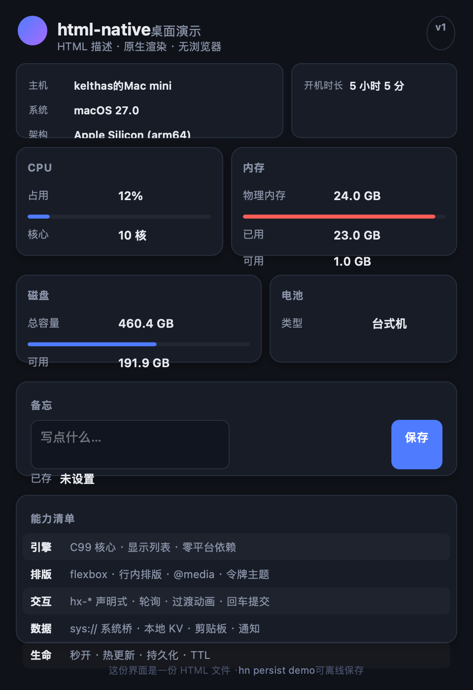
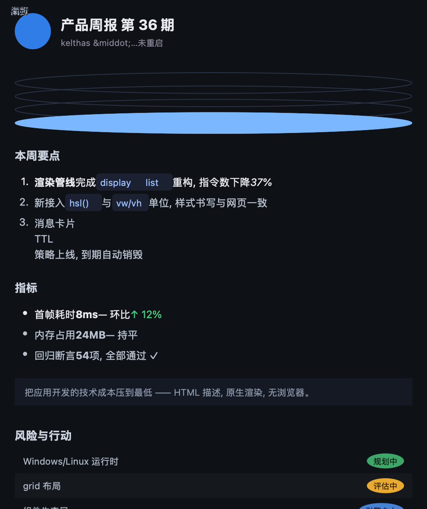
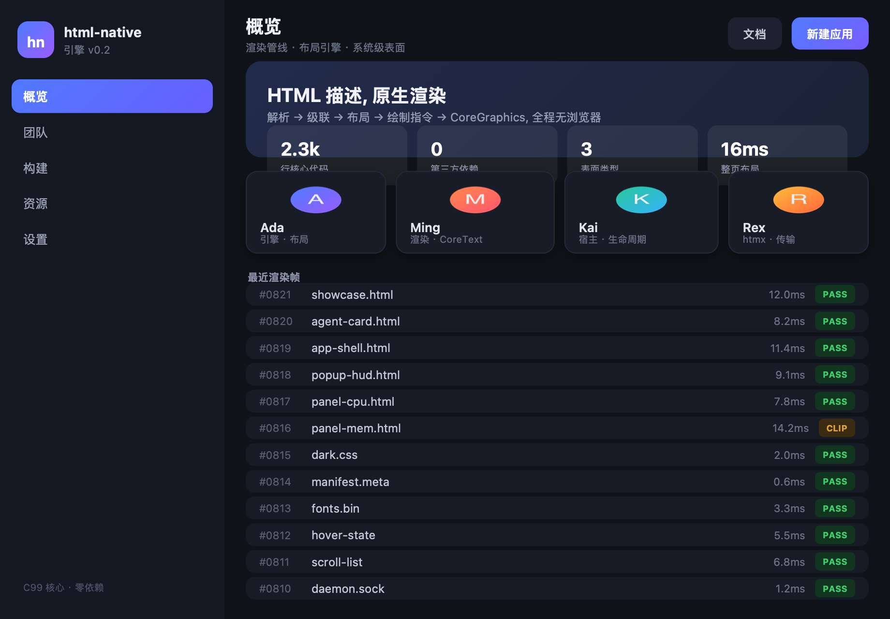
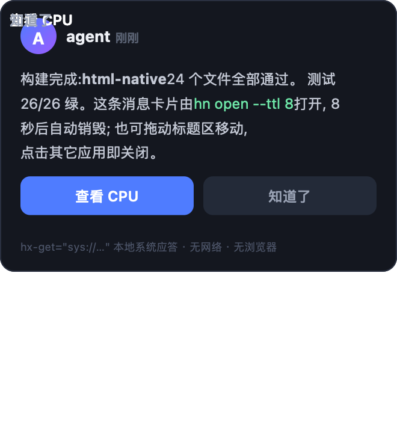
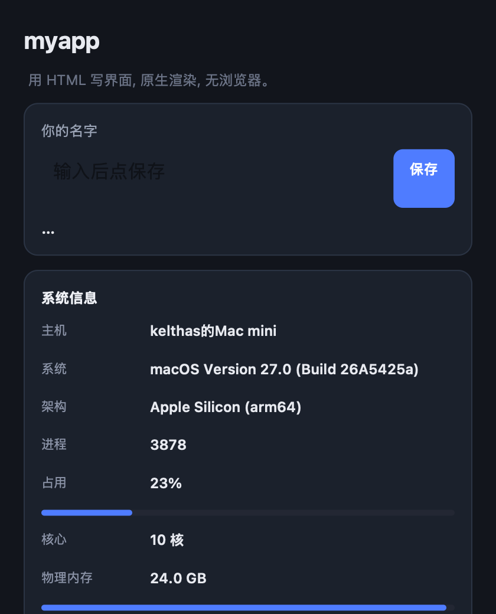
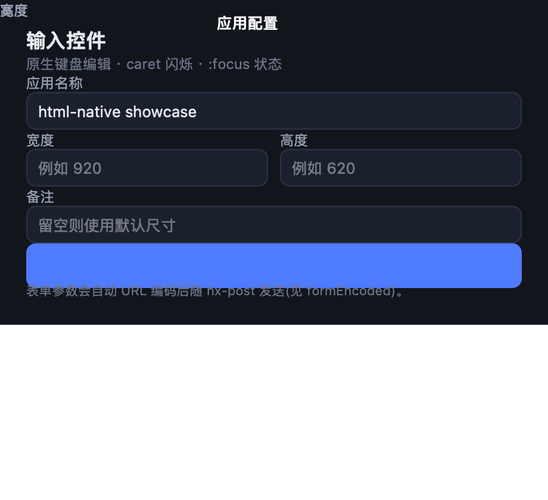

与 RN / Flutter 同级的原生 UI 框架 —— 但 UI 描述语言是 HTML。 没有浏览器、没有 WebView 内核、没有 JavaScript 运行时、没有构建步骤。 一个 C99 引擎负责把标记算成绘制指令，平台运行时把它画到屏幕上。
套 WebView 得到的是网页；自己实现解析、布局、绘制，才谈得上“原生渲染”。 代价是一份引擎，收益是从标记到屏幕像素的每一行都在你手里。
守护进程二进制经 otool -L 验证不链接 WebKit/WebCore。
只有 AppKit + CoreGraphics + CoreText —— 后者是注入的画布与字体后端。
核心只依赖 ISO C 标准库，显示列表是纯数据。 同一份源码交叉编译出 5 个目标产物，跨架构输出逐字节一致。
hn dom 看 DOM 树、hn dump 看绘制指令。
出问题能定位到“哪一层算错了”，而不是只能看到“显示不对”。
人类走 hn new → hn dev 热重载循环；
agent 现场生成标记推给宿主即刻成窗。两条等价路径，同一引擎。
像小程序一样可随时随地生成、销毁、持久化：
--ttl 到期热销毁、hn persist 离线打包、同 id 热更新。
sys:// 零网络桥直接读系统信息、本地 KV、剪贴板、通知，
片段自带样式，换入即用。
核心思路：把“渲染”拆成“算”和“画”。引擎只负责算出一份纯数据的绘制指令清单， 运行时只负责把清单翻译成系统绘图调用 —— 两边通过数据结构解耦。
// 引擎产出的是纯数据，不是绘图调用 typedef struct hn_cmd { hn_cmd_kind kind; // RECT / TEXT / IMAGE / CLIP± float x, y, w, h, radius; hn_color fill, stroke; // 含渐变/阴影 const char *text; // 文本或图片路径 float tx, baseline; // 按基线定位（行内混排对齐） hn_font_desc font; } hn_cmd;
// 引擎不知道字体是什么，只拿回调返回值算几何 typedef struct hn_text_backend { float (*measure)(ctx, font, utf8, len); void (*metrics)(ctx, font, &asc, &desc); } hn_text_backend; // 运行时注入 CoreText 实现；换平台只换这一层
按“网页习惯”书写即可，不需要迁就引擎。
block 常规流、flexbox 全套（grow/shrink/basis/justify/align/gap）、
行内格式化上下文（文本与 inline 元素共享行盒、CJK 码点硬拆、跨行基线对齐）、
inline-flex、margin: 0 auto 居中、
flex margin-left: auto 推右、min/max 约束、
overflow 裁剪+滚动。
tag / class / id / 复合 / 后代 / 分组、
> 子代、+ 相邻、~ 通用兄弟、
:hover :active :focus
:nth-child(odd|even|N|2n) :first-child :last-child；
级联特异性 + 继承 + 行内 style。
盒模型、圆角（含 50% 画圆）、
linear-gradient、box-shadow、opacity、
transition 过渡动画、cursor、
text-decoration、list-style。
#hex（3/4/6/8 位）、rgb(a)、hsl(a)、
transparent、36+ 命名色（函数式支持含空格写法）；
单位 px / pt / % / em / rem / vw / vh。
hx-get/post、hx-target、hx-swap、
hx-trigger="click | load | every Ns"、
表单参数自动携带、input 回车提交（自动定位载体）。
sys://info|cpu|memory|disk|battery|uptime|host 系统数据、
sys://store 本地 KV 持久化、剪贴板、系统通知、
打开 URL —— 全部本地应答，零网络。
<include src> 文件级组件（嵌套/循环检测）；
<meta name="hn-theme" content="dark"> 一行注入设计令牌基座
—— agent 不写 CSS 也能出精致界面。
默认自研引擎原生渲染；遇到 grid/absolute/canvas
等未实现构造，可声明 hn-renderer=webkit 交给系统内核兜底。
绝不静默切换，两条路径共用全部应用语义。
以下均为真实窗口的自绘截图（@2x，无屏幕录制权限依赖），非设计稿。





hn new 产物 · include 组件 · 保存即热更新
hn-shot 用真实视图 cacheDisplay 自绘生成 —— 所见即窗口所得。只需要会 HTML 和 CSS。没有 Node、没有 npm、没有打包器。
# 一次性构建（需 Xcode 命令行工具） $ swift build $ alias hn=.build/debug/Hn # 生成最小应用骨架 $ hn new myapp && cd myapp $ hn dev app.html --css app.css
# app.html 里改标题，保存 <h1>myapp</h1> → <h1>我的应用</h1> # 半秒内窗口同步更新，进程与状态不动 # 引擎 watch 文件 mtime，同 id 热推送新编码
<!-- 系统信息：本地应答，零网络 --> <div hx-get="sys://cpu" hx-trigger="load every 3s">…</div> <!-- 本地持久化：重启后仍在 --> <input id="note" name="value"> <div hx-post="sys://store/set?key=note" hx-target="out">保存</div> <!-- 一行主题：注入完整设计令牌基座 --> <meta name="hn-theme" content="dark">
| 命令 | 作用 |
|---|---|
hn open <id> app.html --css app.css | 打开应用（表面由 meta 决定：window / popup / layer） |
hn dev app.html --css app.css | 开发模式，保存即热更新 |
hn update <id> app.html | 热更新（窗口与状态保持） |
hn list / hn close <id> | 列出运行中应用 / 销毁 |
hn persist / hn restore <id> | 离线打包 .hnapp / 从包恢复 |
hn open app.html --ttl 8 | 消息卡：8 秒后自动热销毁 |
hn dom <id> / hn dump <id> | 内省：DOM 树 / 绘制指令（排查用） |
hn-shot app.html out.png 480 700 --live | 真实视图自绘截图 |
hncore 是引擎核心的无平台 CLI（parse / layout / paint / text / boxes / verify）——
它不链接任何系统 UI 框架，因此可交叉编译到三平台，用于验证与集成测试。
| 目标 | 格式 | 产物 |
|---|---|---|
| macOS arm64 | Mach-O | hncore-macos-arm64 |
| macOS x86_64 | Mach-O | hncore-macos-x86_64 |
| Linux x86_64 | ELF（musl 静态） | hncore-linux-x86_64 |
| Linux aarch64 | ELF（musl 静态） | hncore-linux-aarch64 |
| Windows x86_64 | PE32+ | hncore-windows-x86_64.exe |
# 一条命令构建全部（需要 zig 提供三平台 libc） $ ZIG=zig ./tools/build-multiplatform.sh # 跨架构确定性：同一文档在两个架构上输出逐字节一致 $ diff <(./hncore-macos-arm64 paint app.html) \ <(./hncore-macos-x86_64 paint app.html) # 无差异
-ffp-contract=off）：
arm64 有 FMA 而 x86_64 基线没有，默认融合会让同一文档算出不同的 px 值。
UI 引擎的错误往往表现为“看起来有点不对”，很难靠肉眼发现。 这个项目用可执行的断言锁住每一层。
离屏回归断言，覆盖解析 / 级联 / 布局 / 绘制 / 交互 / 编码 / 双渲染器
语义一致性检查：跨架构绘制指令与盒几何逐字节比对
hncore verify 布局不变量：负尺寸 / 负坐标 / 重叠检测
flex 度量阶段误跑真布局 → 文本在原点生成重影副本（表现为界面出现重复文字）；
完整 margin 简写的分支判断把 6 字母写成 7 → 外边距只作用于左边；
纯色 background 无法覆盖先声明的渐变 → 主题令牌换色失效；
POSIX 函数依赖 → Windows/严格 C99 下无法编译；
FMA 融合 → 跨架构布局差 0.1px。
每一个都补了对应的回归断言，防止复发。